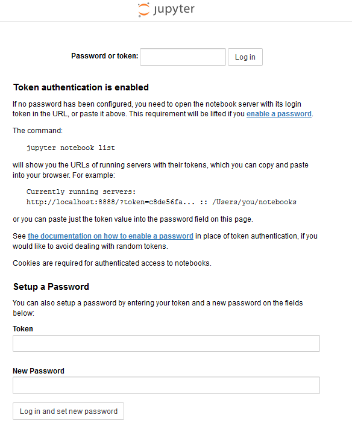

Remote via SSH¶
We can use Jupyter on any suitable client remotely by ssh tunneling
and port forwarding.
cmd='jupyter notebook --no-browser'
ssh -L localhost:localport:remotehost:remoteport remoteuser@remotehost $cmd
For example, we may use the same standard port 8888 locally as well:
ssh -L localhost:8888:localhost:8888 user@nowhere.com $cmd
Then, after entering your ssh password,
[I 03:07:58.252 NotebookApp] Writing notebook server cookie secret to /run/user/1001/jupyter/notebook_cookie_secret
[I 03:07:58.501 NotebookApp] Serving notebooks from local directory: /home/kfp
[I 03:07:58.502 NotebookApp] 0 active kernels
[I 03:07:58.502 NotebookApp] The Jupyter Notebook is running at:
[I 03:07:58.502 NotebookApp] http://localhost:8888/?token=cbf1e582d5b44eadc20cf1fcb806c07b4074fbf9f38e8f27
[I 03:07:58.502 NotebookApp] Use Control-C to stop this server and shut down all kernels (twice to skip confirmation).
[C 03:07:58.503 NotebookApp]
Copy/paste this URL into your browser when you connect for the first time,
to login with a token:
http://localhost:8888/?token=cbf1e582d5b44eadc20cf1fcb806c07b4074fbf9f38e8f27&token=cbf1e582d5b44eadc20cf1fcb806c07b4074fbf9f38e8f27
the jupyter notebook will be started on the remote machine and the port will
be forwared to you, that is, open your browser and copy/paste the URL as
suggested above or alternatively enter
localhost:8888
and you will see something like
If you enter the token (e.g. from the example above: cbf1e582d5b44eadc20cf1fcb806c07b4074fbf9f38e8f27), then you will arrive at the usual Jupyter home page and you may proceed as usual (note that the notebooks are stored remotely, so you have to use menu/download if you want them locally).
Setting a Password¶
Instead of using tokens you may set a password to protect the server:
jupyter notebook password
Details may be found in the official documentation: password
Caveats¶
X11 forwarding
Windows Users¶
Instead of ssh you can use plink or putty from PuTTy.
C:\> plink -L localhost:8888:localhost:8888 usr@host.dom
$ jupyter notebook --no-browser
However,
the ssh client provided by GitBASH for instance, works perfectly as well.
Script¶
Clearly, you can enter the commands into a bash script:
#!/bin/bash
#remote cmd
cmd='jupyter notebook --no-browser'
# ssh template
#ssh -L localhost:localport:remotehost:remoteport remoteuser@remotehost
ssh -L localhost:8888:localhost:8888 usr@host.dom $cmd
# more commands (after termination of jupyter)